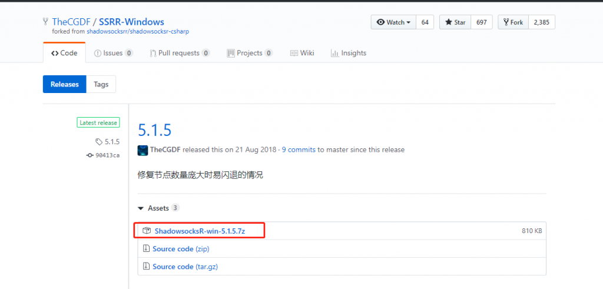
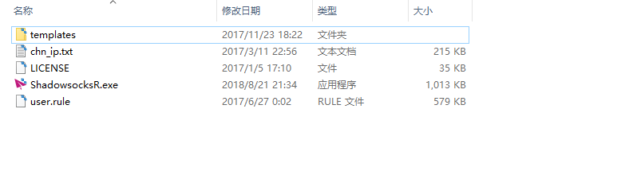

注意事项
-
- 系统代理模式推荐日常使用PAC模式，并记得更新PAC为GWFList。
- 代理规则 建议选择绕过局域网和大陆
ShadowsocksR-SSR 在Windows上的使用及设置方法
在安装之前，请始终确保您的系统满足最低系统要求。
您需要具备 Windows 7 SP1 或更高版本才能运行 Shadowsocks。如果您的操作系统版本较旧， 则请先升级到 Windows 7 SP1 或更高版本。
NET Framework: 如果你的计算机未安装.NET Framework, 请点击 这里 下载最新版本的 .NET Framework。
按照下面的说明在 Windows 中下载并安装 ShadowsocksR。
访问 Shadowsocks Windows 客户端 下载页面。 下载最新版本的 ShadowsocksR-win-x.x.x.7z (x.x.x为版本号) 。

右键解压文件，解压后文件目录如下图：

访问我们的软件可以获取到最新的可用账号， 在您的计算机上， 执行下列操作：